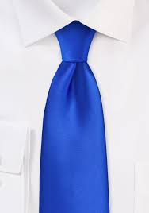

The Opinion Pages
Ode to Obama
You don't know what you've got till it's gone.

Donald Trump: A Modern Manchuroan Candidate?
By MAX BOOTThe onus is on the president-elect to prove he's not Putin's puppet.
Editorial: Trying to Head Off a Health Care Calamity
Disability: My Life With Paralysis, It's a Workout
Should Companie Keep Drivers Off Social Media?
Apple has been sued in a crash in which a driver was using FaceTime.
Anit-Semetic Note Promises 'Mayhem'
Hate crimes and incidents of harassment reported in recent days.